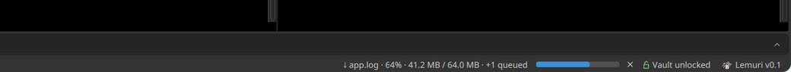

Every server.
One console.
Lemuri is a free, open source desktop SSH client for the servers and VPS you manage: a tree of hosts, tabs and split terminals, uploads over SFTP, live metrics, an encrypted vault, one-file backups, and safe sharing with your team.
Free and open source · MIT license
Take it for a spin
Real screens of the app, with made-up servers. Drag the wheel or use the arrows; click the one in front to zoom in.
Built for people who live in SSH
Everything you need to keep dozens of servers at hand, nothing that gets in the way of the shell.
Every host, one tree
Nested folders you drag around, a coloured mark that says which servers answer on their SSH port, and a small badge with the sessions open on each one. Double-click a host to open its shell; right-click it for everything else.
Tabs, split panes, sync
One tab per session across all hosts. Right-click a terminal to split it side by side or one above the other, on the same host or on another one. Turn on sync and what you type goes to every part at once.

Upload and download, from the terminal
Upload: drag files or folders onto a terminal, or right-click it and choose Upload files to the current folder…. They go where the shell is.
Download: after an ls, right-click a file or folder name and choose Download "name"…, then pick the folder on your computer.
Before anything moves Lemuri tells you what would be overwritten. Progress, the queue and a cancel button are in the status bar; files are written under a temporary name until complete, and symbolic links are not followed.
Live metrics, updates, reboots
CPU, memory, disks and uptime, read straight from each server over SSH. The summary also tells you how many updates are waiting, how many are security fixes, and whether the server asks for a reboot. No agent to install.
Ghost mode
Turn the window into a see-through terminal on your desktop, like a conky widget. Stick it to any edge of the screen with the anchor buttons and drag its inner edge to make it taller or wider; F11 hides it and brings it back.
Backup to another PC
One encrypted file with your hosts, the whole vault and the SSH keys you tick. Import it on the new PC: nothing in ~/.ssh is ever overwritten.
Import your ~/.ssh/config
Every Host of your SSH configuration in a table, ProxyJump and keys included. Duplicates and git services start unticked.
Also in the box
Jump hosts, verified keys
Reach a server through one or more bastions, like ssh -J; terminals, uploads and metrics all go through the same chain. Every host key, at every hop, is checked against known_hosts just like ssh, and new ones are confirmed by hand.
A clickable terminal
After ls, double-click a folder to enter it or a text file to open it in nano; double-click at the prompt for ls. Lemuri types the command for you, in plain sight, skips binary and huge files, and one click on the terminal turns it off.
Encrypted vault
Server passwords are encrypted on disk with AES-GCM, under a key derived from your master password with Argon2id. Key passphrases are never saved.
Your own shell, too
A Terminal tab at the bottom opens a shell on your own computer, next to the servers. In ghost mode it is one tab away, under the session you are watching.
From any terminal
lemuri -s db-01 opens the shell in the terminal you are already in, through the same jump hosts. Saved passwords come from the vault after you unlock it, and never show up in ps.
Hand over a server,
not a password in chat
Send a host, with its credentials, to a teammate in two clicks. It is sealed for them alone and signed by you. No server, no account, nothing to set up.
- Exchange keys, onceSend each other a one-line key and compare its fingerprint by voice or in person. On the same network, link the PCs with a 6-digit code instead.
- Send a hostOn the same network it goes straight to their PC. Otherwise you get an encrypted text to send by email or chat.
- Accept itThey see who sent it and choose where it goes: accept, decline or look later.
Move files to and from a server
Straight between your desktop and the folder you are working in, over the SSH connection that is already open: no second login, no separate SFTP client.
- Go to the folderIn the terminal of the server,
cdto where the files should land. Lemuri asks the shell where it is, so the upload follows you. - Drop the files, or pick themDrag files or whole folders from your file manager onto the terminal. Or right-click the terminal and choose Upload files to the current folder… to pick them in your desktop's own file dialog.
- Or bring one downAfter an
ls, right-click the name of a file or folder and choose Download "name"…, then the folder on your computer. If ls listed another folder (ls /var/log), the name is taken from there. - ConfirmLemuri checks the folder on the server first and tells you which files already there would be overwritten. Nothing is sent before you say yes.
- Watch it goProgress and a cancel button appear in the status bar; more uploads wait their turn in a queue. A file is written under a temporary name and renamed only when complete, so a cancelled upload never leaves half a file in place of the old one. Symbolic links are not followed.
Share over the local network
Two PCs on the same network can pass hosts to each other directly, sealed and signed, without email or chat. It is off until you turn it on.
- Turn it on, on both PCsIn Settings → Local network, or in the Team panel, tick Share over the local network. The PCs announce themselves on private addresses only (UDP 47820) and talk over TCP 47821.
- Connect them, onceIn Team the other PC shows up: click Connect…. A 6-digit code appears on both screens; check together that it is the same, digit by digit, and confirm on both. That PC becomes a contact. If it does not show up (another subnet, a VPN, a firewall), use Add by address… with its IP.
- Send a hostRight-click the host in the tree, Send to team…, tick the contact marked local network. You can include the saved password and a short note; the private key never leaves your PC.
- The other PC acceptsIt shows who sent it and their fingerprint. Accept it into a folder, decline it, or leave it for later under Received from team.
A firewall in the way? Lemuri tells you, with the command to open the two ports, for example sudo ufw allow 47820/udp && sudo ufw allow 47821/tcp. When the PCs are not on the same network, the same host goes as an encrypted text you pass on by email or chat.
Get Lemuri
Free and open source, MIT licensed. There are no ready-made packages yet: Lemuri builds and runs from source.
With JDK 21 and unzip installed:
Maven is not needed: the wrapper downloads it the first time.
| Linux | Build from source. Developed and tested on Ubuntu with GNOME. |
| macOS | Builds from source, but not tested on a real Mac yet. |